地政学
東京は皇居、国会、官庁、最高裁、大使館、報道機関が近距離に集まる首都です。警備、式典、抗議、外交、災害対応が街路に現れ、国内統治と国際接続が同じ通勤圏で動きます。首都機能の集中も大きな課題になります。
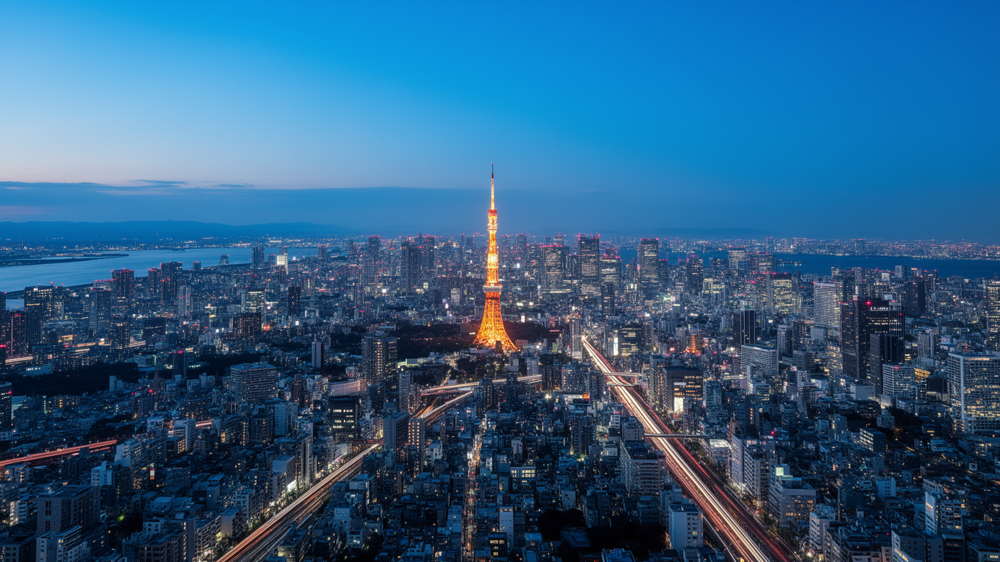
🇯🇵 日本 / アジア / World City Atlas
鉄道と湾岸が束ねる国家首都。皇居、霞が関、丸の内、渋谷、湾岸、郊外住宅地が連続し、政治、金融、出版、情報通信、祭礼、災害対策が同じ都市圏で動いています。
都市の骨格
東京は一つの中心だけで動く都市ではありません。山手線の内側に国家と金融の中枢があり、その外側に私鉄沿線の住宅地、湾岸の物流、郊外の大学と研究施設が広がります。
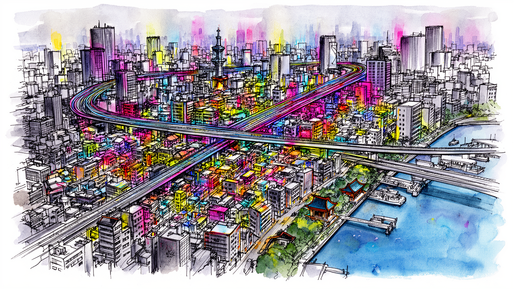
東京は皇居、国会、官庁、最高裁、大使館、報道機関が近距離に集まる首都です。警備、式典、抗議、外交、災害対応が街路に現れ、国内統治と国際接続が同じ通勤圏で動きます。首都機能の集中も大きな課題になります。
丸の内の金融、渋谷の情報産業、出版、湾岸物流、医療、大学研究が重なります。配送、清掃、介護、調理、警備、港湾作業も都市を支え、専門職と現場労働の近さが東京経済を作ります。住む場所も重要な条件です。
神社や寺院は観光資源である前に、初詣、祭礼、葬送、受験祈願を支える生活の暦です。町内の祭り、移民の教会やモスク、食のルールも、東京の文化と宗教を形作ります。地域の記憶も静かに残る都市です。今も続きます。
浅草、銀座、新宿、渋谷、湾岸、上野を短時間で巡れる一方、住民には家賃、通勤、保育、介護、猛暑、防災が日々の課題です。観光の成功は暮らしを守れるかで決まります。名所と日常が近い大都市です。課題も続きます。
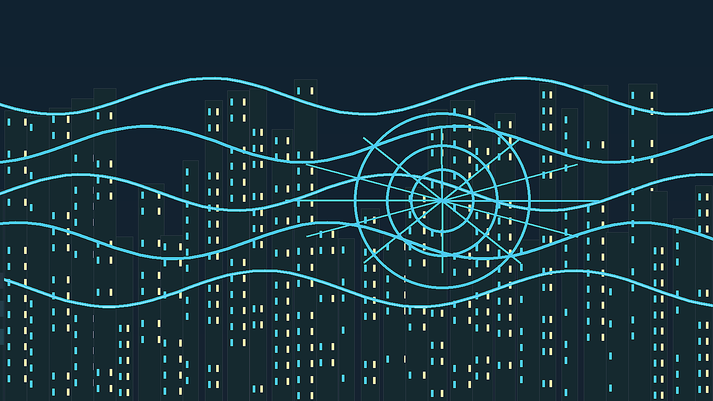
東京の地形は、武蔵野台地、東部低地、河川、運河、埋立地、湾岸で成り立ちます。地図上では建物と道路に隠れていますが、台地と低地の差は浸水リスク、坂道、地下鉄の深さ、住宅地の性格、道路の曲がり方に残っています。皇居周辺から西へ伸びる台地は、官庁街、大学、私鉄沿線の住宅地へ続き、東側の低地は河川、問屋街、工場、倉庫、古い商店街、再開発地を抱えます。東京湾は観光の背景ではなく、都市を支える物流装置です。食品、燃料、建材、コンテナ、空港アクセス、清掃工場、臨海副都心の再開発が湾岸に集中し、内陸のオフィスや住宅を支えます。交通の骨格は山手線だけではありません。地下鉄は都心を細かく結び、私鉄は西と南北の郊外へ住宅地を伸ばし、JRは周辺県の通勤圏を束ね、バスと徒歩が駅から先の生活を補います。東京の広さは面積ではなく、毎朝の乗り換え回数と通勤時間として経験されます。駅前商店街、大学、住宅地、公園、寺社、ライブハウス、保育園が線路に沿って並び、都心へ向かう移動そのものが都市の習慣になります。東京を見るときは、丸の内や渋谷だけでなく、港、倉庫、河口の橋、郊外の車庫、私鉄の分岐駅、地下の排水施設まで都市の骨格として読む必要があります。鉄道会社ごとの沿線文化も重要です。中央線、小田急、京王、東急、西武、東武、京成、京急は、単なる移動手段ではなく、住宅地の価格、商店街の雰囲気、学校、娯楽、休日の行き先まで形作ります。駅の中には商業施設、保育、医療、行政サービスが入り、駅は交通施設であると同時に生活の玄関になります。こうした多中心の構造が、東京を一つの都心だけでは説明できない都市にしています。地形と鉄道は、災害時の避難、通勤の混雑、再開発の場所、外国人観光客の動線まで左右するため、東京の社会を読む基礎になります。とくに東部低地と湾岸では、水害への備えと再開発が常に隣り合います。便利な駅前ほど人が集中し、地下空間ほど雨に弱く、海に近い土地ほど物流と住宅が重なります。東京の地図は、速く移動するための図であると同時に、どこに危険が潜むかを読む図でもあります。地形を意識すると、同じ東京でも西と東、内陸と湾岸で生活条件が異なることが見えてきます。この違いは、家賃、通勤、災害時の移動にも直結します。駅と地形を重ねて見ると、東京の生活圏がより立体的に見えます。
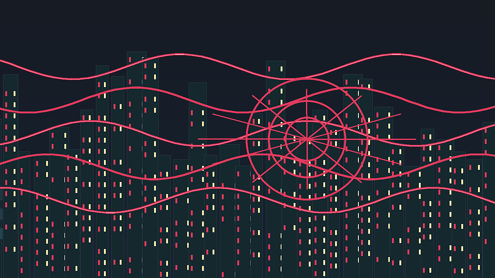
東京を読む第一の入口は、都市の中心が単なる繁華街ではなく国家制度の配置でできていることです。皇居を囲む丸の内、大手町、霞が関、永田町、日比谷、赤坂には、皇室、国会、官庁、最高裁、政党本部、大使館、報道機関、企業本社が近距離に集まり、意思決定の場所と資本の場所がほぼ同じ通勤圏に置かれています。これは日本の政治が抽象的な制度だけでなく、地下鉄の駅、警備の柵、官庁街の昼食、記者クラブ、デモの列、式典の交通規制として都市空間に現れることを意味します。丸の内のオフィス街は金融と本社機能の象徴ですが、その隣には国家の予算、法律、外交、安全保障を扱う霞が関があり、さらに皇居の緑地が都心の空白として残ります。この空白は単なる公園ではなく、都市の中心に歴史的な権威を置く装置です。東京の地政学は国際空港や港だけでなく、国内政治の中枢がここに集中している事実から始まります。地方から集まる官僚、政治家、企業人、研究者、労働組合、メディア、外国大使館の動きが、日々の鉄道網と飲食街に流れ込みます。東京は巨大な消費都市である前に、日本という国家が自分を運営するための作業場であり、その作業場が世界経済と外交の回路にも接続されている都市です。都心の道路や広場は、通勤者を運ぶだけでなく、国家儀礼、警備、抗議、災害対応のためにも設計されています。首相官邸の周辺、国会前、日比谷公園、外苑、靖国通りのような場所は、政治的な記憶と現在の対立が重なる舞台です。東京の権力は巨大な宮殿のように一箇所へ閉じるのではなく、鉄道駅、官庁、ホテル、会議場、報道施設、飲食店へ薄く広がります。そのため都市の中心を歩くことは、制度の配置を歩くことでもあります。地方の問題、国際会議、災害対応、予算編成、企業の投資判断が、同じ都市の昼夜の動きとして現れる点に、東京の首都性があります。さらに、首都機能の集中は災害時の弱点にもなります。行政、金融、報道、交通が一地域に集まりすぎるほど、代替機能や分散の議論が重要になります。東京は国家を動かす装置であると同時に、その集中の危うさを抱える都市でもあります。この集中があるからこそ、東京の街路は日常の移動と国家運営の両方を受け止める場所になります。首都を読む視点は、制度と街路が交わる場所を見ることです。
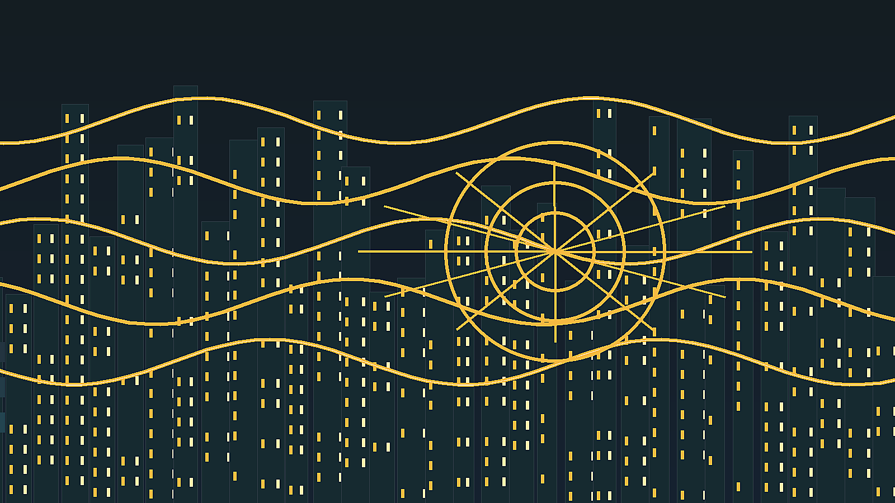
東京の経済は金融と本社機能だけでは説明できません。丸の内、大手町、日本橋には金融、商社、法律、コンサルティング、新聞社が集まり、渋谷、六本木、品川、豊洲には情報通信、広告、ゲーム、映像、スタートアップ、研究開発の仕事が重なります。神保町、御茶ノ水、秋葉原、池袋、吉祥寺、下北沢のような場所には、出版、音楽、劇場、同人文化、大学、古書、専門店が細かい経済を作ってきました。湾岸には港湾、倉庫、展示場、データセンター、清掃工場、物流施設があり、都心の消費と事務を背後から支えます。便利なサービスの表面には、配送、清掃、警備、介護、調理、保守、建設、駅員、バス運転、港湾作業、深夜の仕込みがあります。都市が滑らかに動くほど、その反復作業は見えにくくなります。高収入の専門職と低賃金の現場労働は同じ鉄道で移動しますが、住める場所、働く時間、休める曜日は大きく違います。東京では、企業本社の意思決定、コンビニの物流、病院の夜勤、アニメ制作の締切、保育園の送迎、飲食店の仕込みが一つの都市圏で同時に進みます。経済規模を数字で見るだけでは、都市を維持する人の時間と身体が見えません。東京の強さは、情報、金融、文化、現場労働が異常に近い距離で結びつく密度にあります。労働の問題は、正社員と非正規、専門職とサービス職、日本語を母語とする人と外国人労働者、昼の勤務と夜の勤務の差として現れます。都市の便利さを支える業務ほど、賃金や休息が十分でないこともあります。配達の早さ、店の長時間営業、駅の清潔さ、イベントの安全は、誰かの夜勤や分単位の管理で成り立っています。東京の経済を評価するなら、企業の利益だけでなく、働く人が住み続けられる家賃、移動時間、保育、医療、休暇、技能の継承まで見る必要があります。加えて、東京の産業は周辺県との分業なしには成立しません。研究施設、工場、物流拠点、住宅地、港、空港が都県境を越えて結びつき、都心の意思決定を広域の労働が支えます。東京の経済を都市内だけで閉じて見ると、この広域の依存関係を見落とします。東京の産業は、中心部の華やかさよりも、都市圏全体の役割分担として理解する必要があります。働く場所と住む場所が離れるほど、産業政策は住宅政策や交通政策と切り離せなくなります。都市の競争力は、働く人の生活条件とともに測る必要があります。
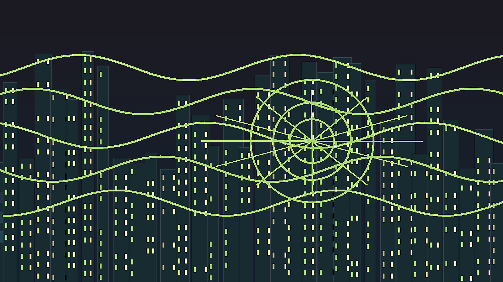
東京の暮らしは、選択肢の多さと生活空間の狭さが同時にあります。都心には仕事、飲食、医療、文化、大学、行政、娯楽が集中し、郊外には戸建て、団地、マンション、商店街、ロードサイド施設、緑地が広がります。便利さは鉄道と駅前の密度によって支えられますが、その便利さは長時間通勤、家賃、保育、介護、孤独、過密、猛暑という負担を伴います。ワンルームで暮らす単身者、共働きで保育園を探す家族、古い団地で暮らす高齢者、留学生、技能実習や外食産業で働く外国人、夜勤の医療従事者は、同じ東京にいてもまったく違う時間割で生活します。駅近の住宅は高く、広い住宅は遠く、通勤時間は家族の食事や睡眠を削ります。東京の住宅問題は、住戸の広さだけでなく、どの駅に近いか、災害時に安全か、保育園や病院へ行けるか、親の介護に通えるかという生活の接続問題です。再開発は古い建物を更新し、防災性や利便性を高める一方、家賃の上昇で小さな店や長く住んだ人を押し出すことがあります。東京の魅力は、どこかに自分の居場所を見つけやすい点にありますが、その居場所を維持する費用は年々重くなっています。都市の豊かさを測るには、オフィスの高さだけでなく、住まい、通勤、介護、休息の余白を見る必要があります。郊外住宅地では高齢化が進み、買い物、病院、坂道、バス路線の減便が生活の質を左右します。都心では子育て世帯が保育園と家賃に悩み、単身者は便利さの中で孤立しやすくなります。住宅の狭さは、在宅勤務、学習、介護、災害時の備蓄にも影響します。東京の生活を考えることは、個人の努力の問題ではなく、住宅政策、交通、地域医療、学校、商店街、公園を一体で考えることです。生活の質は、駅までの距離や部屋の広さだけでは決まりません。夜に安心して歩ける道、子どもが遊べる公園、災害時に助けを求められる近所、言語や年齢に関係なく使える窓口があるかで変わります。東京の暮らしは、便利な施設の数より、それらへ実際に届く人の範囲で評価されるべきです。東京の生活は、個人の選択が豊かな一方で、選べる人と選べない人の差が大きい都市でもあります。だから暮らしの評価では、平均値よりも、子ども、高齢者、単身者、外国人、夜勤者がどの程度使いやすい都市かを見る必要があります。生活の余白は、都市の成熟を測る大切な指標です。
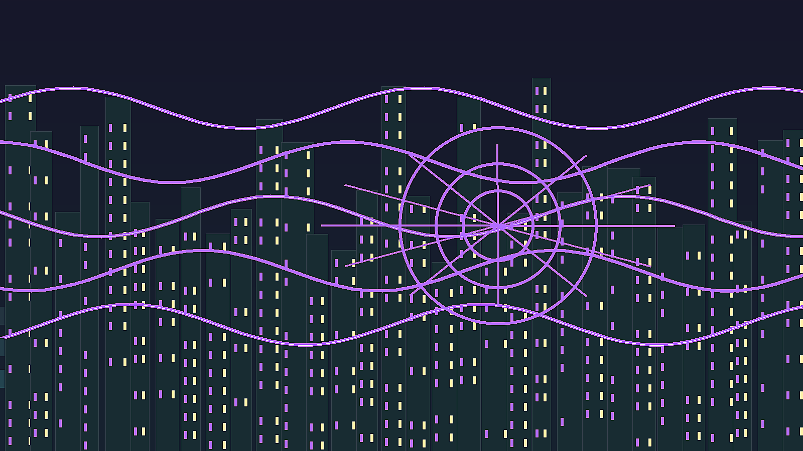
東京の文化は一つの中心から生まれるのではなく、鉄道で結ばれた複数の小さな場から生まれます。浅草は寺社、演芸、観光、問屋の記憶を持ち、上野は博物館、大学、美術館、動物園、アメ横を抱え、銀座は百貨店、画廊、劇場、高級消費の歴史を残します。新宿は歓楽街、都庁、劇場、外国人コミュニティ、地下通路が重なり、渋谷は若者文化、IT企業、再開発、ライブハウス、ファッションを吸収してきました。秋葉原は電気街からアニメ、ゲーム、同人文化、観光の場所へ変わり、神保町は出版と古書の密度を残します。これらの地区は互いに競合しながら、東京全体の文化産業を支えます。テレビ、広告、出版、音楽、漫画、ゲーム、ファッション、食、建築、デザインは、巨大企業だけでなく、小さな編集部、制作会社、ライブハウス、専門店、学校、同人イベント、路地の飲食店によって厚みを持ちます。東京の文化は消費の速さが魅力である一方、家賃上昇や再開発で小さな場所が失われやすい弱さもあります。流行がすぐに生まれ、すぐに消える都市だからこそ、古い商店街、銭湯、古書店、映画館、劇場、小劇場、神社の祭礼が持つ記憶が重要になります。東京文化を読むには、巨大な交差点の広告だけでなく、地下の稽古場、古いビルの編集室、駅前の小さな店まで見る必要があります。文化産業は華やかですが、制作現場には長時間労働、低賃金、締切、権利処理、場所代の問題があります。観客が楽しむ作品やイベントは、編集者、翻訳者、音響、照明、警備、清掃、印刷、配送、同人作家、学生のアルバイトによって支えられます。東京の文化を守るとは、コンテンツを消費するだけでなく、作り手が働き続けられる環境と、小さな発表の場を残すことでもあります。東京の文化は、国内向けでありながら海外へ翻訳され、観光客の期待にも影響します。そのため地域の生活文化が、外から見られる商品へ変わる緊張もあります。文化の発信力を誇るだけでなく、作り手と住民の場所を守れるかが、東京の文化都市としての成熟を決めます。東京文化の価値は、消費される速度だけでなく、記憶を持つ場所が残る時間の長さにもあります。再開発後の街が本当に豊かかどうかは、古い場所の記憶を新しい世代が使い直せるかで決まります。文化の厚みは、発信力と生活の記憶が両立して初めて残ります。
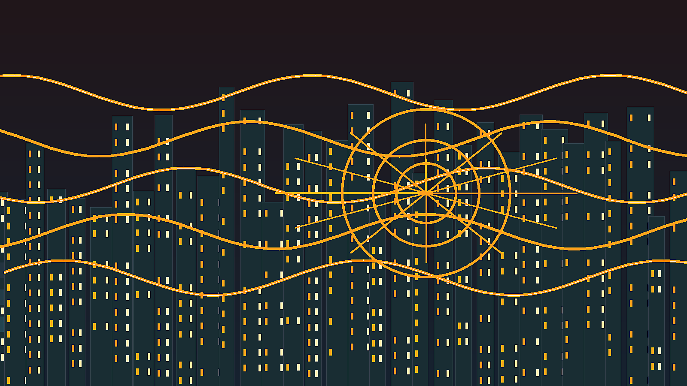
東京の信仰は、巨大寺社だけでなく、町内の小さな祠、墓地、祭礼、商売の祈願、学校行事、家族の法事に宿ります。明治神宮、浅草寺、神田明神、増上寺は観光地として目立ちますが、宗教生活の多くはもっと細かい単位で続きます。初詣、七五三、受験祈願、酉の市、盆踊り、神輿、葬儀、墓参りは、忙しい都市で人が時間を区切り、家族や地域との関係を確認する方法です。祭礼は古い町だけのものではありません。再開発された地区でも、神輿、盆踊り、防災訓練、商店会の催しが地域の顔を作ります。新しいビルが建っても、人が集まり道を使うリズムが残ることで、東京は匿名の巨大都市になり切らずに済んでいます。同時に、外国人住民の増加によって、教会、モスク、寺院、礼拝所、食のルールを支える店も増えています。東京の多文化性は、派手な国際都市イメージだけでなく、学校、職場、病院、行政窓口、宗教施設、食料品店で少しずつ調整される日常の問題です。言語、在留資格、医療、教育、宗教上の食習慣が生活の壁になることもあります。東京の信仰と移民を読むことは、観光名所を巡るだけでなく、地域が誰を受け入れ、どのような支援を作り、どの記憶を残しているのかを読むことです。宗教施設は災害時の避難や相談、言語支援の拠点にもなり得ます。移民の子どもが学校で必要とする支援、高齢の住民が祭礼で得るつながり、商店街が行事を通じて作る顔の見える関係は、統計に出にくい都市の安全網です。東京では、信仰が強い教義として前面に出るより、生活の節目や地域の手続きとして働くことが多くあります。そのため、宗教と移民を読むには、神社仏閣の建築だけでなく、祭りの準備、礼拝後の食事、墓地の管理、多言語の掲示、学校との連絡まで見る必要があります。都市が多文化になるほど、違いを隠すのではなく、日常の中で調整する仕組みが重要になります。宗教的な食のルール、礼拝時間、葬送の方法、名前の読み方、学校行事への参加は、どれも小さく見えて生活の尊厳に関わります。東京が国際都市を名乗るなら、観光客を迎えるだけでなく、住民として暮らす人の宗教と文化を支える制度を整える必要があります。祭礼や祈りは過去の遺物ではなく、孤立しやすい大都市で人を結び直す方法でもあります。その調整の積み重ねが、多文化都市としての信頼を作ります。
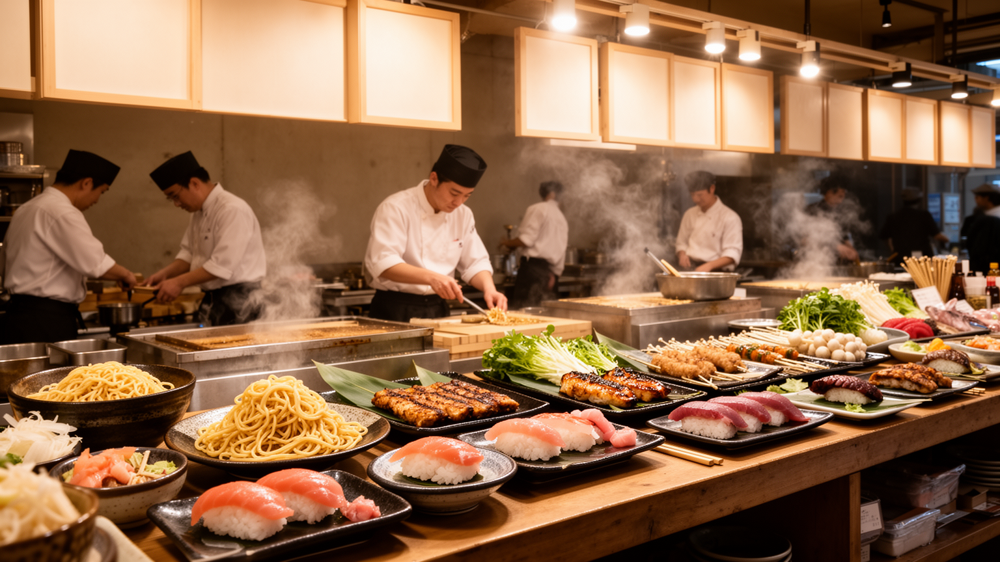
東京観光の強さは、名所が一つの軸に並ぶのではなく、鉄道で短時間に違う種類の都市体験へ移れる点にあります。浅草では寺社、仲見世、川、下町の記憶が重なり、銀座では百貨店、劇場、ギャラリー、老舗、再開発の高級消費が見えます。新宿は高層ビル、歓楽街、外国人観光、都庁、映画館、飲食街を抱え、渋谷は交差点、ファッション、音楽、IT、再開発の速度を見せます。上野では博物館と市場が近く、秋葉原では電子部品、ゲーム、アニメ、観光が重なり、湾岸では橋、展示場、倉庫、海辺の再開発が都市の別の表情を作ります。食はこの観光を日常へつなぐ入口です。寿司、そば、天ぷら、ラーメン、カレー、居酒屋、喫茶店、弁当、コンビニ、デパ地下、屋台風の店は、観光客にとって楽しみであると同時に、働く人の昼食と夜の休息でもあります。東京の食文化は高級店だけでなく、仕込み、卸売、市場、物流、深夜営業、駅前の回転率によって支えられます。観光が増えるほど、店は多言語化し、決済や行列管理が変わり、家賃も上がります。東京を訪れることは、写真映えする街を消費するだけでなく、日常生活と観光経済が同じ路地で交差する現場を見ることです。観光地としての東京は、清潔で安全で効率的な印象を与えますが、その印象は交通整理、清掃、翻訳、配送、警備、店員の接客によって支えられます。観光客が増えると、地域の店は新しい収入を得る一方、住民向けの価格や混雑、騒音、短期滞在の増加に悩むこともあります。食文化も同じです。海外から注目される店の背後には、仕入れ先、修業、家族経営、深夜の片付け、外国人労働者の仕事があります。観光と食を読むことは、東京が外からどう見られるかだけでなく、住民の日常がどこまで守られているかを見ることでもあります。観光案内に載る場所だけでなく、朝の市場、昼の定食屋、夜の立ち食い店、住宅地のベーカリー、駅ナカの弁当売り場を歩くと、東京の食が観光資源である前に都市労働の燃料であることが分かります。食べる場所の多様さは、働く時間の多様さと表裏一体です。東京の観光は、名所をつなぐ鉄道と、日常の食を支える細かな物流があって初めて成立します。観光の成功は、訪れる人の満足だけでなく、住む人がその街を使い続けられるかで判断されるべきです。観光と食は、都市を見る入口であり、住民の生活を映す鏡です。
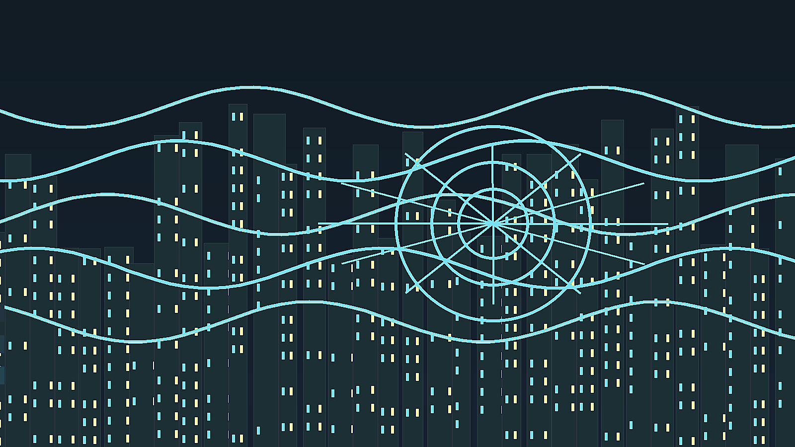
東京は巨大で便利な都市であるほど、災害と気候の影響を強く受けます。首都直下地震、台風、豪雨、高潮、河川氾濫、猛暑、停電、感染症は、行政計画だけでなく日常の習慣に関わります。耐震化された建物、地下鉄の排水設備、防潮堤、避難所、帰宅困難者対策、防災訓練、備蓄、ハザードマップ、学校や町内会の連絡網は、都市の見えにくい基盤です。湾岸や東部低地では浸水リスクがあり、高層マンションでは停電時のエレベーター、水、トイレ、情報通信が問題になります。西側の住宅地でも、木造密集地、狭い道路、高齢者の避難、火災延焼が課題です。猛暑は近年さらに重要になり、アスファルト、ビル風、室外機、通勤、屋外労働、高齢者の孤立に影響します。東京の秩序は自然に保たれているわけではありません。駅の案内、町内の清掃、学校区、行政手続き、鉄道会社の調整、災害時の訓練が積み重なって、ようやく日常の滑らかさが保たれています。災害時には、その滑らかさが一度に試されます。東京を読むことは、成功した大都市の美しさだけでなく、地震、豪雨、猛暑に備える制度、設備、地域のつながりまで見ることです。そこに、世界の他都市がこれから直面する気候リスクと高齢化の縮図があります。防災は行政の計画だけで完結しません。家族で集合場所を決めること、職場が帰宅困難者を受け入れること、地域で高齢者の安否を確認すること、外国人住民へ多言語で情報を届けることが必要です。災害時には、普段は見えない孤立や貧困、障害、言語の壁が一気に表面化します。東京の気候適応は、堤防や排水設備だけでなく、涼める場所、休める職場、避難しやすい住宅、助けを求めやすい近所を作ることでもあります。巨大都市の強さは、混乱を完全に防ぐことではなく、混乱から早く回復できる関係を持つことです。気候変動が進むほど、東京は過去の経験だけでは対応できない暑さと雨に向き合うことになります。都市の更新は、豪華な再開発だけでなく、日陰、緑、水辺、断熱、避難路、公共トイレ、情報伝達の改善として行われる必要があります。防災と気候適応を生活の質として扱えるかが、東京の次の成熟を決めます。災害に強い都市とは、壊れない都市ではなく、被害を小さくし、弱い人を早く見つけ、生活を戻せる都市です。備えは特別な行事ではなく、毎日の都市運営の一部です。
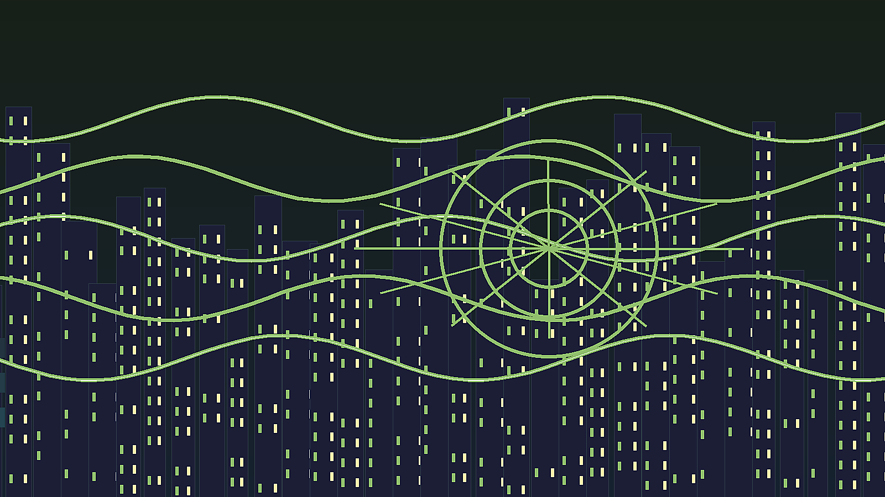
東京の魅力は、選択肢の多さにあります。深夜まで動く街、細かい飲食店、専門店、劇場、大学、病院、鉄道、図書館、公園が高密度にあり、趣味や仕事や学びの場を見つけやすい都市です。しかし、その便利さは長時間通勤、狭い住宅、家賃、保育、介護、孤独、過密、猛暑といった問題を伴います。都市が効率的であるほど、人は自分の疲れを見えにくくし、生活を個人の努力で調整しがちです。高齢化は郊外住宅地と都心の両方で進み、単身世帯や孤立の問題を強めます。若い世代には家賃と雇用の不安があり、子育て世帯には保育、教育費、通勤の負担があります。外国人労働者と留学生は都市を支えていますが、言語、在留資格、差別、医療、住居の壁に直面します。再開発は防災性と利便性を高める一方、古い文化の場所や小さな店を失わせることがあります。東京がこれからも世界都市であるためには、大企業と観光だけでなく、生活の基盤を支える人が住み続けられること、地域の祭礼や文化の場所が残ること、災害時に弱い人を置き去りにしないことが重要です。東京を読むことは、巨大都市の効率と豊かさが、誰の時間と負担によって成り立っているのかを問い直すことです。人口減少社会の中で、東京だけが人と資本を吸い寄せ続けることには限界があります。地方との関係、外国人労働者の権利、若者の住まい、子育て、高齢者の孤立、文化の場所、防災投資を同時に考えなければ、都市の便利さは維持できません。東京の未来は、新しい高層ビルの数ではなく、弱い立場の人が都市に残れるかで測られます。世界都市としての競争力と、生活都市としての包容力を両立できるかが、次の東京の課題です。そのためには、都市の成功を消費額や再開発面積だけで測らず、住民の健康、移動の負担、学び直し、地域のつながり、文化の継承、災害への回復力で測る視点が必要です。東京は完成した都市ではなく、毎日の調整でかろうじて動いている都市です。その不安定さを認めることが、未来を考える出発点になります。さらに、東京が周辺地域や地方から人材と資源を吸い寄せ続ける構造も問われます。首都の繁栄が他地域の衰退と結びつくなら、東京の未来は日本全体の地域政策と切り離せません。世界都市として開くことと、国内の均衡を壊しすぎないことの両立が必要です。東京の未来は、便利さを支える人の生活を守れるかにかかります。
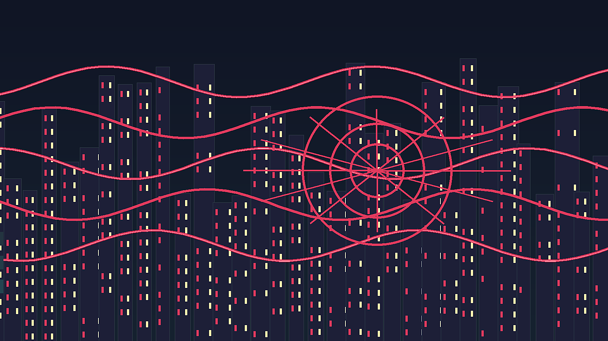
東京は、世界都市としての華やかさと、生活都市としての細かさが極端に近い距離で重なる場所です。皇居、官庁、金融街、テレビ局、大学、出版社、アニメ制作会社、駅前商店街、湾岸倉庫、神社、病院、団地、私鉄沿線の住宅地が、同じ鉄道網の中で互いに依存しています。ニューヨークやロンドンのように移民と金融の問題を抱えながら、東京には地震、台風、高齢化、長時間通勤、人口集中という独自の緊張があります。都市の秩序は、静かな礼儀や効率性として語られがちですが、実際には鉄道会社、行政、町内会、学校、企業、清掃、警備、配送、医療、介護、個人の我慢が積み重なって保たれています。東京を歩くと、超高層ビルの足元に小さな祠があり、最先端の広告の裏に古い飲み屋街があり、湾岸の新しい住宅の向こうに物流施設があります。この重なりが東京の読みにくさであり、面白さです。経済、文化、宗教、生活、防災、社会問題を分けて見たうえで、最後にそれらが駅と路地でつながっていることを確認すると、東京は単なる巨大消費地ではなく、現代都市の成功と疲労を同時に示す地図になります。東京は、秩序ある都市という評価の背後で、労働、住宅、移民、防災、文化継承の問題を抱えています。その矛盾を隠さず読むことで、首都の強さと弱さが同時に見えてきます。鉄道の便利さ、治安、清潔さ、祭礼、住宅の狭さ、災害への不安、長時間労働を一緒に見ると、都市の評価は単純な豊かさや観光人気だけでは決められません。東京の核心は、巨大な制度と小さな生活が互いに支え合いながら、時に互いを圧迫する点にあります。便利さを維持するための労働が見えなくなり、文化の発信力が地域の場所を押し出し、防災の安心が個人の備えに偏ると、都市の強さは脆さへ変わります。それでも東京が重要なのは、問題を抱えながらも、鉄道、地域、商業、行政、文化が毎日調整され続けているからです。東京を読むことは、巨大都市で人がどう働き、祈り、移動し、食べ、老い、災害に備えるのかを読むことです。人口が多いだけでなく、制度、産業、文化、住まい、災害への備えが互いに近すぎるほど結びついているため、一つの改善が別の負担を生むこともあります。だから東京の価値は、便利さを増やす速度だけでなく、暮らしの負担をどこまで軽くできるかにも表れます。